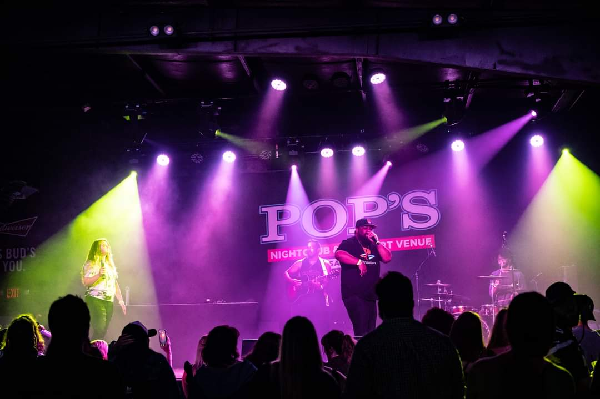

Music
Might as well get the biggest one out of the way. I'm a professional musician who specializes in acoustic fingerstyle guitar. Over the years, however, I've ended up playing in nearly every major western genre. These days I play guitar in the hip-hop scene and I am constantly inspired by the talent I find myself surrounded with.